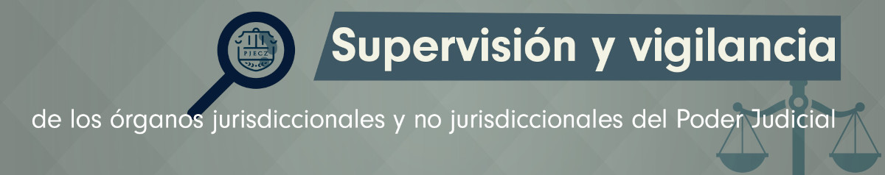

Ciudadanas y ciudadanos
Bienvenidas y bienvenidos al Observatorio Judicial del Estado de Coahuila. A nombre de quienes integramos el Consejo Técnico y el Capítulo Regional, les saludo y les informo que en ese sitio encontrarán información relevante sobre las actividades que desarrolla este órgano ciudadanizado.
Al interior del Poder Judicial del Estado, trabajamos para poner en el centro de nuestro quehacer a la persona que requiere nuestra intervención, en pleno apego a derecho y a la protección de garantías, y esto solo se logra cuando quienes tenemos la noble encomienda de administrar justicia lo hacemos de la manera más transparente.
Es así que para garantizar a todas y a todos el acceso a la justicia, debemos llevar a cabo nuestras actividades con los más altos valores de honestidad e imparcialidad, y para ello, hoy las y los ciudadanos son nuestros principales aliados.
Las ciudadanas y ciudadanos son nuestros ojos y nuestro principal mecanismo de control en las labores que se llevan a cabo en cada órgano que integra este poder público, y bajo un esquema de justicia abierta, trabajamos para crear un efectivo canal de comunicación con ustedes que nos permita detectar áreas de oportunidad y mejorar los servicios que ofrecemos, por lo que fortaleceremos el órgano que para tales efectos se creó en 2017.
Las y los integrantes del Observatorio Judicial tienen la libertad de emitir las recomendaciones pertinentes para mejorar los servicios que ofrecemos, pues éste es un órgano de consulta y apoyo, con autonomía de operación, cuyo objetivo primordial, es el coadyuvar, en la esfera de su competencia, en la supervisión y vigilancia del quehacer de los órganos jurisdiccionales y no jurisdiccionales, con la finalidad de identificar problemáticas en el funcionamiento de los mismos y formular, en su caso, recomendaciones y propuestas para mejorar su operación.
La participación ciudadana en el quehacer jurisdiccional, requiere compromiso y seriedad, es así que en la operación de este Observatorio Judicial contamos con el apoyo y dedicación de ciudadanas y ciudadanos con experiencia en asociaciones u organizaciones que tienen por objeto promover la participación y construcción de ciudadanía. Todos ellos con un profundo compromiso con la sociedad coahuilense.
Reitero mi compromiso y seguiremos empeñando nuestros esfuerzos por la mejora en la impartición de justicia, por contar con absoluta transparencia en nuestras actividades y por hacer de este poder judicial, una instancia confiable y garante de los derechos de las y los coahuilenses.
El Observatorio Judicial es un componente fundamental de una justicia que se imparte de cara a la ciudadanía, por ello convocamos a la participación de todas y todos los coahuilenses para construir el modelo de justicia que responda a las exigencias de nuestro tiempo.
Magistrado Miguel Felipe Mery Ayup
Presidente del Tribunal Superior de Justicia y del Consejo de la Judicatura del Estado de Coahuila de Zaragoza
Quiénes Somos
Integración
Actividades
Biblioteca Digital
Recomendaciones
Organizaciones e Instituciones que están representadas en el Observatorio
Contacto
- Saltillo, Coahuila de Zaragoza
- Teléfono 844 439 1439
- Correo electrónico observatoriojudicialcoahuila@pjec.gob.mx